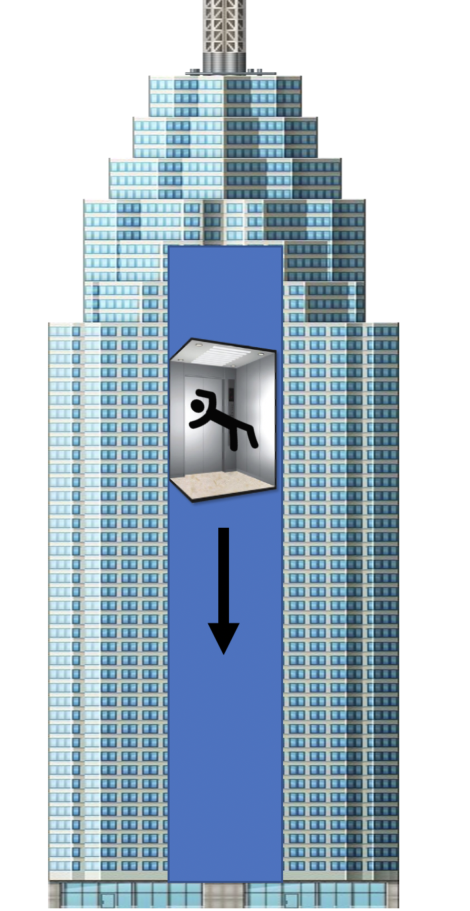
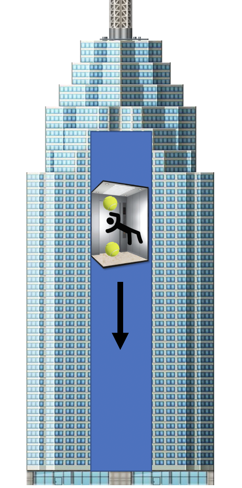

Du må bruke presentasjonsmodus/fullskjermsvisning for å lese denne, men du skal ikke bruke frem/tilbake-knappene, KUN knappene som dukker opp på sliden for å ta deg videre! Ofte må du laste filen ned til maskinen din og åpne den der for å få til dette. Merk at noen knapper vil åpne nettskjema, videoer eller andre ressurser i internettbrowseren din. Når du gjør det riktig, skal du kun se en side av gangen, og når du trykker på knappene som dukker opp på skjermen så skal disse ta deg frem/tilbake i dokumentet. Du vil miste mye læringsutbytte hvis du ser flere slides av gangen. Får du det ikke til, spør foreleser/gruppelærer!
Trykk denne knappen for å begynne
Dette er en erstatning for forelesningen i emnet. Har du gått skikkelig gjennom disse interaktive forelesningsnotatene så trenger du ikke å lese de fulle forelesningsnotatene (med unntak av oppgavene bak). All informasjonen du trenger, får du her. Du kommer til å få mange grublespørsmål og diskusjonsoppgaver, det er meningen at disse skal gjøres i grupper av minst 2, maks 4 studenter. Det er defor sterkt anbefalt at dere sitter sammen i grupper når dere går gjennom disse interaktive forelesningsnotatene, du vil få betydelig mer utbytte av dem på den måten. En god ide kan være å bli enige om å treffes til den faste forelesningstiden og bruke forelesningslokalet som kommer til å være resevert til dette. Hvis du har kommentarer ris/ros til disse forelesningsnotatene eller til emnet, trykk på 🙂 🙁 knappen som du finner på alle sider.
Trykk denne knappen for å begynne
HUSK at du får mer ut av de interaktive forelesningsnotatene når du gjør de sammen med noen. Diskusjonene med andre er svært viktige.
Det er mange spørsmål/grubliser underveis, sett dere selv en tidsgrense, 1-2 minutter på de korte, 4-5 minutter på de lenger. Ha en alarm ved siden av, ellers kommer dere til å bruke alt for langt tid. Har dere ikke fått det til etter 5 minutter, gå videre, se svaret og lær!
Er du i det minste tvil om noe, så finnes det nå en PADLETknapp, trykk det og still spørsmål med en gang mens du enda husker spørsmålet!
Trykk denne knappen for å begynne
Forrige side
Velkommen til forelesning 1 av 2 i del 2C! Vi skal nå se hvordan geometrien til tidrommet, og dermed uttrykket for tidromsavstander Δs endrer seg i et gravitasjonsfelt. Vi får en krumning av det 4-dimensjonale tidrommet, vanskelig å se for seg, men med dramatiske konsekvenser for oss! Vi skal så se på hvordan vi kan regne med en slik krum geometri og hvilke observatører som observerer hva.
Fremstillingen av generell relativitetsteori i AST2000 er basert på den fantastiske boken “Exploring black holes” av E. Taylor, J. Wheeler og E. Bertschinger, gratis tilgjengelig her. Anbefales på det sterkeste for den som er interessert. (Illustrasjon fra pngegg.com) Neste side
‘ Forrige side🙂 🙁IntroduksjonPADLET
Mange sider sier du? Neida, det er mye figurer og mange sider med stor og veldig lite skrift. Jeg kommer normalt gjennom dette på en dobbelttime fysisk forelesning
Vi begynner som vanlig... ...med litt brainstorming. Som det er svært viktig at du gjør før du går videre.
Trykk her for å varme opp
Er du klar og har sendt inn skjemaet? Nei Ja
Nytt tema:
Schwarzschildgeometri
Forrige side🙂 🙁SchwarzschildgeometriPADLET
Vi begynner utradisjonelt med en likning som ikke er pensum. Dette er Einsteinlikningen: Gμν = 8πTμν Til venstre her har vi Einsteintensoren Gμν og til høyre har vi stressenergitensoren Tμν. Vi lærte kort (utenfor pensum) på slutten av del 2B hva en tensor er, altså en matrise med spesielle betingelser på samme måte som en 4-vektor er en vektor med spesielle betingelser. I elementene av Tμν setter man inn energiinnholdet (deriblant også masseinnholdet) i systemet man ser på som funksjon av posisjon i rommet. Og ut på venstre siden faller tidrommets geometri ut. Med tidrommets geometri menes rett og slett et uttrykk for Δs, altså for hvordan avstander skal måles i tidrommet.
Forrige side🙂 🙁SchwarzschildgeometriPADLET
$$\begin{aligned}
a&b\\
c&d\\
e&f\end{aligned}$$ La oss ta et eksempel: anta at du har helt tomt tidrom, bare vakum som over. Putter vi det inn i Tμν på høyre side i Einsteinlikningen så faller det ut av venstresiden at Δs2 = Δt2 − Δx2 Altså at rommet har Lorentzgeometri! Det vil si at Lorentzgeometri er gyldig når det ikke finnes noen legemer i nærheten som kan sette opp tyngdefelt.
Forrige side🙂 🙁SchwarzschildgeometriPADLET
$$\begin{aligned}
a&b\end{aligned}$$
$$\begin{aligned} a&b\end{aligned}$$ Hvis vi isteden har en kulesymmetrisk massefordeling og putter det inn i Tμν på høyre side i Einsteinlikningen så faller det ut av venstresiden at $$\Delta s^2=\sst\Delta t^2-\frac{\Delta r^2}{\sst}-r^2\Delta\phi^2$$ Dette er tidromsavstanden i ß-geometri. Kort tid etter at Einstein hadde formulert sin generelle relativitetsteori, så fant Karl Schwarzschild en av de svært få analytiske løsningene som finnes: løsningen for en kulesymmetrisk massefordeling.
Forrige side🙂 🙁SchwarzschildgeometriPADLET
$$\begin{aligned}
a&b\end{aligned}$$
$$\begin{aligned} a&b\end{aligned}$$ $$\Delta s^2=\sst\Delta t^2-\frac{\Delta r^2}{\sst}-r^2\Delta\phi^2$$ Massen til den kulesymmetriske massefordelingen er M. Tidromsavstanden er her uttrykt i polarkoordinater, r er et koordinat som går fra sentrum av den kulesymmetriske massefordelingen og ϕ er en vinkel som går rundt slik som du er vant til i polarkoordinater. MEEEEN, er vi ikke i tre dimensjoner da? Skulle vi ikke ha en vinkel til?
Forrige side🙂 🙁SchwarzschildgeometriPADLET
$$\begin{aligned}
a&b\end{aligned}$$
$$\begin{aligned} a&b\end{aligned}$$ $$\Delta s^2=\sst\Delta t^2-\frac{\Delta r^2}{\sst}-r^2\Delta\phi^2$$ Nope, det trenger vi ikke! Kan du se hvorfor? Tenk deg litt om før du blar om!
Forrige side🙂 🙁SchwarzschildgeometriPADLET
$$\begin{aligned}
a&b\end{aligned}$$
$$\begin{aligned} a&b\end{aligned}$$ $$\Delta s^2=\sst\Delta t^2-\frac{\Delta r^2}{\sst}-r^2\Delta\phi^2$$ La oss først tenke, Δs, det er da en avstand eller da en linje mellom 2 eventer i tidrommet og dermed også to punkter i rommet. Men for å bruke polarkoordinator (r,ϕ) med kun en vinkel ϕ, trenger vi jo faktisk et plan som trenger tre punkter for å defineres. Vi trenger derfor et punkt til for å definere et plan. Men hvilket punkt kan vi bruke? Vi har jo bare 2 eventer når vi definerer Δs?
ikke gå videre før du har et forslag
Forrige side🙂 🙁SchwarzschildgeometriPADLET
$$\begin{aligned}
a&b\end{aligned}$$
$$\begin{aligned} a&b\end{aligned}$$ $$\Delta s^2=\sst\Delta t^2-\frac{\Delta r^2}{\sst}-r^2\Delta\phi^2$$ Tenkte vi på det samme? Sentret av den kulesymmetriske massefordelingen, selvfølgelig! Med senteret pluss de to eventene så har vi et plan, og dermed trenger vi ikke noe mer? Begge eventene og sentrum av massefordelingen er et og samme plan, dermed holder det å ha med dette planet i likningen. Polarkoordinatene er dermed definert på dette planet!
Forrige side🙂 🙁SchwarzschildgeometriPADLET
$$\begin{aligned}
a&b\\
e&f\end{aligned}$$ La oss gå tilbake et øyeblikk til tomt rom. Hvis vi i romt rom definerer oss et “sentrum”, så kan også Lorentzavstanden skrives i polarkoordinater. Da ser det slik ut: Δs2 = Δt2 − (Δx2+Δy2) = Δt2 − Δr2 − r2Δϕ2 Sammenlikn med ß: $$\Delta s^2=\sst\Delta t^2-\frac{\Delta r^2}{\sst}-r^2\Delta\phi^2$$ Ser du at forskjellen kun er i Δr og Δt-leddet? Leddet med Δϕ er likt. Dermed er det i ϕ − retningen ingen forskjell mellom ßog Lorentz. Merk deg det nå, vi kommer til å se eksempler etterhvert.
Forrige side🙂 🙁SchwarzschildgeometriPADLET
$$\begin{aligned}
a&b\end{aligned}$$
$$\begin{aligned} a&b\end{aligned}$$ $$\Delta s^2=\sst\Delta t^2-\frac{\Delta r^2}{\sst}-r^2\Delta\phi^2$$ Tilbake til ß. Kan du se noe rart i dette uttrykket for tidromsavstanden? Minst to rare ting!
ikke gå videre før du har et forslag
Forrige side🙂 🙁SchwarzschildgeometriPADLET
$$\Delta s^2=\sst\Delta t^2-\frac{\Delta r^2}{\sst}-r^2\Delta\phi^2$$ Ser du noe rart eller ikke?? JANEI
Forrige side🙂 🙁SchwarzschildgeometriPADLET
$$\Delta s^2=\sst\Delta t^2-\frac{\Delta r^2}{\sst}-r^2\Delta\phi^2$$ Hva med enhetene? Hva med ting under brøkstreken?
Forrige side🙂 🙁SchwarzschildgeometriPADLET
$$\begin{aligned}
a&b\end{aligned}$$
$$\begin{aligned} a&b\end{aligned}$$ $$\Delta s^2=\sst\Delta t^2-\frac{\Delta r^2}{\sst}-r^2\Delta\phi^2$$ Ser du at masse M blir delt på avstand r? Og at dette skal bli et enhetsløst tall siden vi tar et et-tall minus 2M/r? Husker du hvordan vi i spesiell relativitetsteori måler tid og avstander i samme enheter? I generell relativitetsteori måler vi begge disse i meter, men ikke bare det, vi måler likesågodt også masse i meter! Dette er det ingen opplagt fysisk årsak til. Men det gjør at i tillegg til c = 1 så er også G = 1. Dermed blir det enklere å regne.
Forrige side🙂 🙁SchwarzschildgeometriPADLET
$$\begin{aligned}
a&b\end{aligned}$$
$$\begin{aligned} a&b\end{aligned}$$ $$\Delta s^2=\sst\Delta t^2-\frac{\Delta r^2}{\sst}-r^2\Delta\phi^2$$ I kvantefysikk vil du se at vi også kan sette Plancks konstant h = 1. Når vi regner i enheter slik at både c = 1, G = 1 og ℏ = 1 så kaller vi det naturlige enheter, som er et vanlig enhetssystem å bruke i moderne fysikk. Omregningen fra kg til meter går via G/c2. Merk at $$\frac{G}{c^2}=7.42\times 10^{-28}\mathrm{m}/\mathrm{kg}$$ altså 1 kg=7.42 × 10−28 meter.
Forrige side🙂 🙁SchwarzschildgeometriPADLET
$$\begin{aligned}
a&b\end{aligned}$$
$$\begin{aligned} a&b\end{aligned}$$ $$\Delta s^2=\sst\Delta t^2-\frac{\Delta r^2}{\sst}-r^2\Delta\phi^2$$ I kvantefysikk vil du se at vi også kan sette Plancks konstant h = 1. Når vi regner i enheter slik at både c = 1, G = 1 og ℏ = 1 så kaller vi det naturlige enheter, som er et vanlig enhetssystem å bruke i moderne fysikk. Omregningen fra kg til meter går via G/c2. Merk at $$\frac{G}{c^2}=7.42\times 10^{-28}\mathrm{m}/\mathrm{kg}$$ altså 1 kg=7.42 × 10−28 meter.
Forrige side🙂 🙁SchwarzschildgeometriPADLET
$$\begin{aligned}
a&b\end{aligned}$$
$$\begin{aligned} a&b\end{aligned}$$ $$\Delta s^2=\sst\Delta t^2-\frac{\Delta r^2}{\sst}-r^2\Delta\phi^2$$ Hva blir så massen til sola i meter? Og til jorda? Og hvor mye veier du i meter? Prøv å regn litt, dette må du venne deg til, så gjør det med en gang!
Forrige side🙂 🙁SchwarzschildgeometriPADLET
$$\begin{aligned}
a&b\end{aligned}$$

$$\begin{aligned}
a&b\end{aligned}$$ Bilde: Event Horizon Telescope Collaboration
$$\Delta s^2=\sst\Delta t^2-\frac{\Delta r^2}{\sst}-r^2\Delta\phi^2$$ Fikk du at massen til jorda er 4.45mm? Og at solas masse er 1.484 km? Så over til det andre rare her: hva skjer når r = 2M? Skjer det noe rart i formelen? Når hele massen M er samlet innenfor radius r = 2M, så har vi et sort hull. Dvs. hvis vi presser hele jordas masse innenfor en radius på 2M = 2 × 4.45mm så får vi et sort hull. Grensen r = 2M kalles hendelsehorisonten (event horizon). Innenfor der er unnslippingshastigheten større enn lyshastigheten.
Forrige side🙂 🙁SchwarzschildgeometriPADLET
$$\Delta s^2=\sst\Delta t^2-\frac{\Delta r^2}{\sst}-r^2\Delta\phi^2$$ Merk at ß-tidromsavstanden Δs kun er gyldig i den delen av rommet som er utenfor massen M. Dvs. at hele massen M må være innenfor avstanden r fra sentrum for at dette skal kunne brukes. Derfor er det slik at hvis du har et event ved r = 2M eller innenfor, så kan du kun bruke dette uttrykket hvis hele M også er innenfor r = 2M. Og det betyr at vi har et sort hull og at r = 2M er hendelsehorisonten. Det er også greit å vite at uendeligheten eller singulariteten vi får i likningen ved r = 2M er det vi kaller en koordinatsingularitet, dvs. at hvis vi bytter til et annet koordinatsystem så forsvinner denne singulariteten og vi kan fint bruke r = 2M for å beregne Δs, dette skal vi se et eksempel på i en ukeoppgave. Dette er på samme måte som hvis du bruker kulekoordinater: θ = 0 på nordpolen. Hvis du har en funksjon som går som 1/θ så blir den uendelig på nordpolen. Men hvis du roterer aksene dine slik at θ = 0 et annet sted, så får du ikke lenger en uendelighet på nordpolen. Det som dermed er en ekte singularitet her, altså en ekte uendelighet, er ved r = 0, altså i sentrum av et sort hull. Der bryter fysikken sammen!
Forrige side🙂 🙁SchwarzschildgeometriPADLET
Men før vi skal begynne å bruke dette uttrykket for Δs, må vi innom en del nye konsepter og definisjoner! Hvis du hang med på de siste sidene kan du gå videre, hvis du ønsker en oppsummering først, kikk på denne videoen
Nytt tema:
Inertialsystemer
Nå trenger du en strekk på bena! Men spar gjerne kaffen til neste tema, der trenger du den mer. La oss se litt nærmere på intertialsystem-begrepet...
Forrige side🙂 🙁InertialsystemerPADLET
Hva var et intertialsystem igjen?? Hvordan kan du teste om du er i et inertialsystem akkurat nå? Kan du lage en punkt-for-punkt oppskrift som enhver kan bruke for å sjekke om de er i et inertialsystem? Jepp, har skrevet ned en punktliste nå
Fikk du noe slikt?
Ta en gjenstand, en hvilket som helst.
Hold den med begge hender til du får den til å stå helt i ro i forhold til deg selv.
Gjenstanden skal så slippes helt
Forblir gjenstanden da på nøyaktig det samme sted som du slapp den? Selv etter at du venter lenge? Ja da er du i et intertialsystem!
Sååååååå, er DU i et intertialsystem nå?
næææ, gjenstanden akselererte i retning jordas sentrum...
Forrige side🙂 🙁InertialsystemerPADLET
Og så må jeg kjøpe meg ny kaffekopp 🙁.
Forrige side🙂 🙁InertialsystemerPADLET
Men trenger du å reise ut i rommet for å komme deg til et inertialsystem? Kan du tenke deg en måte å lage et intertialsystem her på jorda på??
Forrige side🙂 🙁InertialsystemerPADLET
Det var meningen at du skulle tenke deg godt om! Så, hvordan vil du gå frem for å lage et intertialsystem? Hvordan kan du slippe å ødelegge kaffekoppen neste gang du tar testen?
Forrige side🙂 🙁InertialsystemerPADLET

Hvis du er i en heis i en skyskraper. Og heiskablene plutselig ryker. Hva skjer da?
Forrige side🙂 🙁InertialsystemerPADLET

Hvis du følger oppskriften og nå tar en ball og slipper den i ro, hva skjer? Forblir den ikke i ro i forhold til deg? Både du og ballen blir vektløs inne i heisen (helt til den kræsjer da...). Du er da faktisk i et inertialsystem! Men nøyaktig hva gjør at ballen forblir i ro i forhold til deg når du slipper den?
Forrige side🙂 🙁InertialsystemerPADLET
Nøyaktig hva gjør at ballen forblir i ro når du slipper den? Tegn krefter og se om du ser det! Ikke bla om før du har svaret!
Forrige side🙂 🙁InertialsystemerPADLET
Er det ikke slik at tyngdeakselrasjonen er like for alle? Siden $$G\frac{\cancel{m}M}{r^2}=\cancel{m}a$$ Massen til legemet forkortes bort og alle objekter får samme tyngdeakselrasjon, både heisen, ballen og du! Dere får dermed hele tiden samme hastighet. MERK: vi ser her bort fra luftmotstand på heisen og antar den er i fritt fall!
Forrige side🙂 🙁InertialsystemerPADLET

Men hva hvis vi har to baller En øverst i heisen og en nederst. Vil disse også forbli i ro i forhold til heissystemet??? JA! Vi er jo i et inertialsystemNEI! De vil begynne å falle nedover
NEI! De vil begynne å falle oppoverNEI! De vil begynne å falle mot hverandre
NEI! De vil begynne å gå fra hverandreNEI! De vil gå i tilfeldige retninger
Forrige side🙂 🙁InertialsystemerPADLET
Ikke helt! Tenk igjen: tegn krefter på begge ballene og på heisen. Krafta på heisen virker på massesenteret til heisen som er i midten av heisen. Hvordan vil ballene akselerere i forhold til heissystemet?
Forrige side🙂 🙁InertialsystemerPADLET

Det er helt riktig. Ballen nederst er nærmest jordas sentrum og får størst tyngdeakselrasjon. Heisen som har massesenter i midten får litt mindre tyngdeakselrasjon enn ballen nederst. Og ballen øverst er lengst vekk fra jordas sentrum og får minst tyngdeakselrasjon. Dermed akselereres den nederste ballen litt mer nedover enn heisen. Og ballen øverst akselereres litt mindre enn heisen. Dermed vil ballen øverst “henge igjen” og ballen nederst falle litt nedover i forhold til heisen.
Forrige side🙂 🙁InertialsystemerPADLET
MEN MERK: Denne effekten er SVÆRT liten!!! Forskjellen i tyngdeakselrasjon for ballen øverst og nederst er veldig liten. Sannsynligvis vil ikke denne effekten være målbar. Vi har derfor det som vi kaller for et lokalt inertialsystem. Hvis du ikke kan måle at du har avvik fra et inertialsystem så er du for alle praktiske formål i et inertialsystem selv om dette inertialsystemet er begrenset i rom og i tid. Og i et inertialsystem vet vi at vi har Lorentzgeometri! Der er spesiell relativitetsteori gyldig og vi slipper å bruke det kompliserte ßuttrykket for Δs!!
Forrige side🙂 🙁InertialsystemerPADLET
La oss se på et eksempel til. Vi har et fly i fritt fall uten luftmotstand:

Vi har også en ball i hver ende av flyet. Vil disse ballene forbli i ro i forhold til flyets referansesystem?? JA! Vi er jo i et inertialsystemNEI! De vil begynne å falle nedover
NEI! De vil begynne å falle oppoverNEI! De vil begynne å falle mot hverandre
NEI! De vil begynne å gå fra hverandreNEI! De vil gå i tilfeldige retninger
Forrige side🙂 🙁InertialsystemerPADLET
Ikke helt! Tenk igjen: tegn krefter på begge ballene og på flyet. Tegn gjerne inn hele jorda med flyet langt vekk fra jorda. Pass på at kraftvektorene virker inn mot sentrum av jorda. Hvordan vil ballene akselerere i forhold til flysystemet?
Forrige side🙂 🙁InertialsystemerPADLET

Det er helt riktig. Her ser vi det hele på avstand. Kraftvektorene er slik at de også får en bitteliten komponent langs flyet slik at ballene akselereres mot hverandre.
Forrige side🙂 🙁InertialsystemerPADLET

Ballenes bevegelse mot hverandre vil være ekstremt liten og sannsynligvis ikke målbar! Igjen så har vi et lokalt inertialsystem som har Lorentzgeometri, eller en geometri som er så nær Lorentzgeometrien at avvik ikke kan måles.
Forrige side🙂 🙁InertialsystemerPADLET
Vi har sett to eksempler på lokale intertialsystem. Slike systemer er viktige for å gjøre det lett å regne når vi jobber med generell relativitetsteori. Det er mye lettere å regne i Lorentzgeometri når alle resultater fra spesiell relativitetsteori er gyldig enn å regne med ß-geometri. Når du har en problemstilling i et tyngdefelt er det derfor viktig å først prøve å identifisere slike lokale inertialsystemer.
Forrige side🙂 🙁InertialsystemerPADLET
Et lokalt inertialsystem... er et referansesystem som er avgrenset i tid og rom slik at man innenfor disse områdene i tid og rom kan regne med Lorentzgeometri. Grensene for dette lokale intertialsystemet begrenses av hvor nøyaktige svar du ønsker eller hvor nøyaktige måleinstrumenter du har. Sett deg en grense for nøyaktigheten for tallene og dette gir deg grensen for hvor stort området for det lokale intertialsystemet er i tid og i rom. I tillegg finnes det en betingelse til for at vi skal kunne bruke antakelsen om lokalt inertialsystem: observatøren må også gjøre målingene lokalt nær eventet: observatøren må også være nær eventet!.
Heisen er liten nok til at den er et lokalt inertialsystem, men hvis heisen var mye større og ballene fortsatt i hver sin ende, ville effekten av forskjellen i gravitasjon til slutt blitt målbar og kanskje for store for kravene vi ønsker å sette til nøyaktighet. Da blir heisen ikke lenger et lokalt inertialsystem. Det er altså en rombegrensning. Det lokale intertialsystemet er kun gyldig innenfor en utstrekning Δy. Tilsvarende: hadde heisen falt lenge nok, for eksempel flere år, da ville vi til slutt kunne måle ballenes bevegelse. Dermed er det også en tidsbegrensing, det lokale intertialsystemet er kun gylding innenfor et gitt tidsintervall Δt bestemt av hvor nøyaktig vi ønsker å regne.
Forrige side🙂 🙁InertialsystemerPADLET
La oss se på en analogi. Vi vet at jorda er rund. Det vil si at man på jorda må bruke sfærisk geometri når man beregner lengder, vinkler og arealer langs overflaten av jorda. På en kuleflate er ikke Euclidsk geometri gyldig. Langs en kuleflate kan du ikke bruke pytagoras setning og Δs2 ≠ Δx2 + Δy2. Men for en bitteliten del av jordoverflaten så er overflaten tilnærmet helt flat og vi kan bruke Euclidsk geometri tilnærmet for denne delen av jordoverflaten:
På et lite avgrensen område av jordoverfalten kan vi med god tilnærmelse bruke Euclidsk geometri, og det er jo det vi stort sett gjør når vi f.eks. beregner arealet av landområder.
Forrige side🙂 🙁InertialsystemerPADLET
ß-geometri er geometrien for et krummet tidrom, altså at tidrommet er krummet litt som jordoverflaten er krummet. Mens Lorentzgeometri kalles flat tidromgeometri fordi denne er veldig lik flat Euclidsk geometri, kun med unntak av det berømte minustegnet i uttrykket for Δs. Helt på samme måte som man kan bruke flat Euclidsk geometri på et lite avgrensen område av jordoverflaten, kan man bruke Lorentzgeometri for flatt tidrom på et lite avgrensen område av tidrommet selv om geometrien rundt er en annen. Men merk at i det siste tilfellet er denne avgrensning er en avgrensing samtidig i både tid og i rom. Og dette området kalles et lokalt inertialsystem!
Kaffe!

En tur ut i minst 15 minutter. Trenger frisk luft nå! Og kanskje en tur i heisen? Eller flere turer i heisen? Helt til kablene ryker! Hadde jo vært kult å prøve ut Lorentzgeometri, ß-geometri er litt ut nå altså.
Jeg er klar til å fortsette...
Nytt tema:
3 observatører
Forrige side🙂 🙁3 observatørerPADLET
Når vi snakker om generell relativitetsteori skal vi ofte bruke sorte hull som eksempler. Dette er de enkleste makroskopiske objektene med stor masse som vi kan tenke oss. I et sort hull er all masse samlet i et uendelig lite punkt i rommet ved r = 0. Om massen faktisk er samlet i et uendelig lite punkt er tvilsomt, det er nok et uttrykk for at vi ikke kjenner de fysiske lovene i et slikt system, men massen er nok konsentrert veldig kompakt i et veldig lite område rundt r = 0. Men vet du hva definisjonen av et sort hull er? Hvordan kunne du gjøre et fysisk eksperiment for å sjekke om du er i et sort hull?
Tjaaaa, jeg har kanskje et forslag
Forrige side🙂 🙁3 observatørerPADLET
Et sort hull er et område der unnslippingshastigheten er større en lyshastigheten. Derav navnet “sort”, hvis ikke en gang lys slipper ut, så er det en god betegnelse. Lys som sendes ut vil falle ned igjen.
Forrige side🙂 🙁3 observatørerPADLET
Vi husker fra Newtons mekanikk at unnslippingshastighet viser seg å være: $$v=\sqrt{\frac{2GM}{r}}$$ Hvis unnslippingshastigheten skal være lyshastigheten v = c og vi skriver dette med relativistiske enheter, får vi: $$1=\sqrt{\frac{2M}{r}}$$ Vi ser at dette er oppfylt ved r = 2M som er nøyaktig den r-koordinaten som gir oss uendelig i Δs for ß-geometri: $$\Delta s^2=\sst\Delta t^2-\frac{\Delta r^2}{\sst}-r^2\Delta\phi^2$$ Hvis vi klarer å presse materie sammen slik at den totale massen M er presset sammen innenfor en radius r = 2M så vil unnslippingshastigheten være større en lyshastigheten og vi har et sort hull
Forrige side🙂 🙁3 observatørerPADLET
Avstanden r = 2M fra sentrum av det sorte hullet (r = 0 der alle masse er konsentrert) kalles for hendeleshorisonten (event horizon) og ß-radien. Vi skal bruke begge navn her så merk deg disse! Hvis du altså kommer innenfor radien r = 2M fra sentrum av et sort hull, så er unnslippingshastigheten større enn lyshastigheten og du har ingen mulighet til å komme ut igjen. Du kan heller ikke sende lyssignaler til de som er på utsiden. Vi skal også senere se at hvis du kommer på innsiden av r = 2M, så er det umulig å stå stille, du vil automatisk bevege deg innover mot r = 0 uansett hva du gjør.
Forrige side🙂 🙁3 observatørerPADLET
Et sort hull er et veldig enkelt objekt å jobbe med da de eneste egenskapene det har er masse, ladning og angulærmoment men ingen (kjent) utstrekning. Merk at et sort hull ikke er helt sort. Kvantemekaniske effekter ved hendelsehorisonten gir opphav til Hawkingstråling. Dermed stråler det sorte hullet Planck-stråling og på denne måten sakte men sikkert mister masse. Det skal vi ikke snakke mer om i dette kurset. Men et sort hull skal vi altså bruke som eksempel fremover.
Forrige side🙂 🙁3 observatørerPADLET
Som i spesiell relativitetsteori så skjer eventer på forskjellige steder og forskjellige tider avhengig av observatøren. I spesiell relativitetsteori var det relativ fart mellom observatører som avgjorde når og hvor eventer skjer. I generell relativitetsteori har vi 3 grupper av observatører. Her
kan du se en video om de 3 observatørene, og her er oppsummeringen av videoen:
Langt-vekkobservatøren befinner seg så langt bort fra den sfærisk symmetriske massen at han ikke kan måle tyngdefeltet og dermed har Lorentzgeometri. Langt-vekkobservatøren ser eventer rundt det sorte hullet med en kikkert da han ikke selv er til stede i nærheten av eventene som skjer.
Skallobservatører befinner seg på kuleformede skall som er satt opp på faste avstander r fra sentrum av den kulesymmetriske massen. Skallobservatørene måler posisjoner/avstander kun lokalt rundt sin egen posisjon. Normalt vil man sette opp en tenkt skallobservatør rett ved et event for å regne på hva som skjer ved eventet og hva lokale observatører som står i fast r-posisjon vil se. En skallobservatør kan f.eks. være oss her på jorda. Eller en satelitt i sirkulær bane rundt jorda.
Fritt fallende observatører er inne i et rom (f.eks. en heis) i fritt fall. Også disse måler posisjoner og avstander kun lokalt rundt sin egen posisjon. På samme måte som for skallobservatørene vil vi sette inn fiktive fritt fallende observatører i nærheten av eventer for å kunne regne på hva en lokal observatør som ikke står fast på et skall vil observere. Vi bruker den fritt fallende observatøren for eksempel når vi skal se på hva en observatør som faller inn i et sort hull vi oppleve
Forrige side🙂 🙁3 observatørerPADLET

Før vi skal se nærmere på de 3 observatørene trenger vi å se nærmere på posisjonskoordinatet r i uttrykket for Δs. Hvordan vil f.eks. skallobservatøren måle hvilken avstand r hun har fra sentrum? I figuren ser vi en skallobservatør på et skall omkring et sort hull (lenger vekk enn r = 2M vel og merke!). Hun prøver å heise en meterstav (grønn-sort) ned i det sorte hullet for å måle avstanden til sentrum. Hvordan tror du det går?
Forrige side🙂 🙁3 observatørerPADLET
Nettopp ja! Ikke så bra!. Målestaven vil jo bare forsvinne inn i sentrum av det sorte hullet. Skallobservatøren kan jo bare fire ned målestaven mer og mer, men den kommer aldri frem. Målt på den måten er det uendelig langt frem til sentrum av det sorte hullet. Vi må finne en annen måte å definere og måle avstanden/koordinatet r på!!.
Forrige side🙂 🙁3 observatørerPADLET

La oss se det hele fra langt-vekkobservatørens perspektiv. Langt-vekkobservatøren har Lorentzgeometri og kan dermed bruke Euclidsk geometri på flate plan når han kun ser på rommet og ikke på tiden. For langt-vekkobservatøren vil den vanlige regelen om at omkretsen av en sirkel er 2πr være gyldig. For denne observatøren vil dermed avstanden r fra sentrum til skallet som han kan måle i teleskopet sitt være like stor som omkretsen som han også kan måle i teleskopet delt på 2π. Når uttrykket for Δs faller ut av Einsteinlikningen så har koordinatet r nettopp blitt definert på denne måten: det er avstanden r som en langt-vekkobservatør måler fra sentrum av det sorte hullet.
Forrige side🙂 🙁3 observatørerPADLET
Minner igjen om uttrykket for Δs: $$\Delta s^2=\sst\Delta t^2-\frac{\Delta r^2}{\sst}-r^2\Delta\phi^2$$ der r altså er avstanden fra sentrum og ut til der eventet skjer målt fra en observatør langt unna tyngdefeltet!. Vi nevnte tidligere også det siste leddet som inneholder ϕ. Dette leddet så vi var helt likt med Lorentzgeometri. Det betyr at avstand målt rundt i ϕ-retning, slik som omkretsen av et skall, kommer til å være den samme for langt-vekkobservatøren som for skallobservatøren siden denne delen av geometrien er Lorentz/Euclid for begge.
Forrige side🙂 🙁3 observatørerPADLET
Hvis vi benytter oss av dette så kan vi konkludere med at vår venn Skallobservatøren i figuren over ikke trenger en målestokk, men et målebånd som hun trenger å trekke i en sirkel rundt hele skallet for å måle omkretsen. Og når hun har målt omkretsen kan hun finne hvilket r-koordinat hun er på ved å ta $$r=\frac{\mathrm{omkrets}}{2\pi}$$
Forrige side🙂 🙁3 observatørerPADLET

Når vi har klart for oss hvordan koordinaten r måles, er vi klare til å bli bedre kjent med alle våre 3 observatører. Vi begynner med langt vekk-observatøren som får informasjon om tidspunkter t for eventer fra klokker som han har plassert rundt det sorte hullet og som er synkronisert med hans egen klokke. Det er alltid en slik klokke plassert ut der det skjer et event. Klokka sender beskjed til langt-vekkobservatøren om tidspunktet som eventet skjedde på denne klokka som altså er fikset til å gå med samme hastighet og er synkronisert med langt-vekkobservatørens klokke. Lokale klokker vil nemlig gå med en annen hastighet som vi snart skal se. Posisjoner for eventer har vi allerede sett hvordan langt-vekkobservatøren måler gjennom ß-koordinatet r.
Forrige side🙂 🙁3 observatørerPADLET

La oss nå se på skallobservatøren. Skallobservatøren har sin egen klokke til å måle skalltid tsh. MERK at skalltiden avhenger av hvilket skall (altså hvilken r) som skallobservatøren står på. Skallobservatører på forskjellige skall vil ikke være enige om tiden tsh. Vi har sett at skallobservatøren må måle omkretsen av skallet for å finne koordinaten r. Denne koordinaten er ikke det målet som skallobservatøren bruker til å måle avstander med, dette er kun langt vekk-observatørens lengdemål. Vi skal snart se forskjellen på disse to, men la oss først begynne med å se på forskjellen mellom tiden t for et event målt av langt-vekkobservatøren og tiden tsh målt av skallobservatøren på et skall r.
Forrige side🙂 🙁3 observatørerPADLET
For å finne forskjellen i tid mellom tidsintervallet Δt mellom to eventer målt av langt-vekkobservatøren og tidsintervallet Δtsh målt av skallobservatøren på et skall r, skal vi gjøre slik som vi gjorde i spesiell relativitetsteori. Kan du huske hvordan vi brukte togobservatør og bakkeobservatør til å finne en sammenheng mellom et tidsintervall Δt på bakken og et tidsintervall Δt′ på toget?
Hvis jeg ikke husket det så sjekket jeg nå...
Forrige side🙂 🙁3 observatørerPADLET

Nettopp ja, vi lagde oss to eventer som var to tikk på klokka i togsystemet og så fant vi tiden mellom de to eventene på klokkene til hver av observatørene. Vi gjør det samme nå: Vi definerer oss to eventer som er to tikk på klokka til skallobservatøren. Hvis det er svært kort tidsintervall mellom disse tikkene, så kort at effektene av tyngdefeltet ikke merkes, så kan vi si at skallobservatøren befinner seg i et lokalt inertialsystem. MERK at det skal vi alltid gjøre med skallobservatøren! Vi skal alltid lage eventer som skjer så nær hverandre i tid at de er innenfor grensen til et lokalt inertialsystem. Dette betyr i praksis at Δ-ene våre egentlig skal være infinitesimale d-er, men for å gi mer fysisk forståelse så skal vi skrive endelige Δ-er.
Forrige side🙂 🙁3 observatørerPADLET
Siden vi for skallobservatøren alltid ser på eventer som skjer så nær hverandre i tid og rom så bruker dermed skallobservatøren alltid Lorentzgeometri. Langt-vekkobservatøren derimot kan aldri anta lokalt inertialsystem: husk at en viktig betingelse for lokalt intertialsystem var at observatøren også måtte være til stede lokalt der eventet skjedde for å gjøre målinger. Det får aldri langt-vekkobservatøren til per def! Han må dermed bruke ß-geometri.
Forrige side🙂 🙁3 observatørerPADLET
Vi skal nå finne en sammenheng mellom tidsintervallet mellom de to tikkene på klokka til skallobservatøren. For skallobservatøren var tidsintervallet Δtsh mens langt-vekkobservatøren målte et tidsintervall Δt mellom de samme to tikkene på klokka til skallobservatøren. Akkurat som i spesiell relativitetsteori skal vi bruke at tidromsintervallet Δs er det samme for begge observatører. Dette er et universalt resultat. Vi har: $$\Delta s_\mathrm{sh}^2=\Delta t_\mathrm{sh}^2-\Delta r_\mathrm{sh}^2-r^2\Delta\phi_\mathrm{sh}^2\ \ \ \ \ \ \ \Delta s^2=\sst\Delta t^2-\frac{\Delta r^2}{\sst}-r^2\Delta\phi^2$$ Merk at “sh” står for “shell” altså skallobservatør. Merk også som vi akkurat har diskutert at skallobservatøren her bruker Δs for Lorentzgeometri mens lang-vekkobservatøren bruker ß-geometri.
Forrige side🙂 🙁3 observatørerPADLET
Vi vet at Δs = Δssh eller $$\Delta t_\mathrm{sh}^2-\Delta r_\mathrm{sh}^2-r^2\Delta\phi_\mathrm{sh}^2=\sst\Delta t^2-\frac{\Delta r^2}{\sst}-r^2\Delta\phi^2$$ Men siden tikkene skjer på samme sted så er Δr = Δrsh = 0 og Δϕ = Δϕsh = 0. Og vi står igjen med $$\Delta t_\mathrm{sh}=\sqrt{\sst}\Delta t$$ der $\sqrt{\sst}$ er den “gravitasjonelle Lorentfaktoren” som spiller samme rolle som γ i spesiell relativitetsteori.
Forrige side🙂 🙁3 observatørerPADLET
Men la du merke til en ting her: $$\Delta t_\mathrm{sh}^2-\Delta r_\mathrm{sh}^2-r^2\Delta\phi_\mathrm{sh}^2=\sst\Delta t^2-\frac{\Delta r^2}{\sst}-r^2\Delta\phi^2$$ Vi trenger strengt tatt ikke at de to tikkene er på samme ϕ-posisjon!. Som vi allerede har snakket om så er ϕ-delen av geometrien (ϕ-leddet i Δs) helt lik i Lorentz og ß-geometri som vi ser av uttrykket her. Dermed er også ϕ = ϕsh. Dermed trenger vi ikke kreve at Δϕ = 0. Siden Δϕ = Δϕsh så forkortes dette leddet bort på begge sider. Dermed er resultatet gyldig for alle tidsintervaller mellom eventer som foregår på det samme skallet.
Forrige side🙂 🙁3 observatørerPADLET
$$\Delta t_\mathrm{sh}=\sqrt{\sst}\Delta t$$ Men hvilke konklusjoner kan du trekke fra dette uttrykket? Hvor går tiden fortere, langt inne i et tyngdefelt eller langt vekk fra tyngdefeltet? Hva skjer med tiden når r nærmer seg hendelsehorisonten på r = 2M? Og hva hvis to eventer er samtidige på skallet, er de samtidige for langt-vekkobservatøren også? Tenk deg godt om og lek litt med uttrykket før du går videre!
Forrige side🙂 🙁3 observatørerPADLET
$$\Delta t_\mathrm{sh}=\sqrt{\sst}\Delta t$$ Ja hvor går tiden fortere? Anta at klokka til skallobservatøren tikker en gang i sekundet. Vil langt-vekkobservatøren med kikkert måle på sin klokke at det tar kortere eller lengere tid enn 1 sekund mellom hvert tikk på skallobservatørens klokke? Kortere!Lengere!
Du lurer ikke meg, det blir selvfølgelig like lenge!
Forrige side🙂 🙁3 observatørerPADLET
Det ble ikke helt riktig $$\Delta t_\mathrm{sh}=\sqrt{\sst}\Delta t$$ Er r her større eller mindre enn 2M? Blir da Δt større eller mindre enn Δtsh? Prøv f.eks. med å sette inn en verdi for r angitt i M (og pass på om r skal være større eller mindre enn 2M da!). Da får du ut tall.
Forrige side🙂 🙁3 observatørerPADLET
Flott! $$\Delta t_\mathrm{sh}=\sqrt{\sst}\Delta t$$ Siden r > 2M (altså skallobservatøren er utenfor hendelsehorisonten, det bør hun helst være!) så blir Δt større enn Δtsh. Det tar altså mer enn et sekund mellom de to tikkene for langt-vekkobservatøren. Han ser altså at alt som foregår på skallet går i saktefilm. Hva da med en skallobservatør som står rett på hendelsehorisonten. Hvor lang tid vil langt-vekkobservatøren se at det tar mellom to tikk på klokka til denne skallobservatøren?
Forrige side🙂 🙁3 observatørerPADLET
$$\Delta t_\mathrm{sh}=\sqrt{\sst}\Delta t$$ Vi ser altså at langt-vekkobservatøren vil se at tiden går saktere nedover i tyngdefeltet og stopper helt opp på r = 2M! Men hva med to hendelser som er samtidige på et gitt skall? Vi lærte i spesiell relativitetsteori at for observatører med forskjellig hastighet, er samtidighet relativt. Hvordan blir det her? Samtidige hendelser på skallet er ikke samtidige for langt-vekkonbservatøren
Samtidige hendelser på skallet er også samtidige for langt-vekkonbservatøren
Forrige side🙂 🙁3 observatørerPADLET
$$\Delta t_\mathrm{sh}=\sqrt{\sst}\Delta t$$ Enig at hvis Δtsh = 0 (samtidige hendelser på skallet) her så må også Δt = 0??? Det betyr at de også blir samtidige observert av lang-vekkobservatøren! Stikk motsatt at spesiell relativitet! Men merk at i det øyeblikk en av observatørene begynne å bevege seg og få en fart så trer også spesiell relativitet inn og samtidighet blir relativt igjen.
Forrige side🙂 🙁3 observatørerPADLET
Vi har nå sett hvordan tiden går forskjellig mellom en langt-vekkobservatør og en skallobservatør. Hva så med lengder/avstander? Vi har allerede sett at avstander rundt langs ϕ-retning er like mellom langt-vekkobservatør og skallobservatør siden ϕ-delen av geometrien er lik. Men hva med lengder i r-retning?
Forrige side🙂 🙁3 observatørerPADLET
Hvordan fant vi sammenhengen mellom lengder målt av forskjellige observatører i spesiell relativitetsteori? Brukte vi ikke to eventer på hver side av objektet som vi skulle måle lengden til? Og at disse eventene var samtidige i det ene referansesystemet? Vi prøver oss på samme fremgangsmåte her, en meterstav der det skjer to samtidige eventer på hver ende av staven. Og samtidig for både skallobservatør og langt-vekkobservatør!
Forrige side🙂 🙁3 observatørerPADLET

Her ser vi situasjonen med to sprengladninger som går av samtidig (dermed to eventer) i begge ender av staven. Kan du nå finne en sammenheng mellom lengden Δr målt av langt-vekkobservatøren for staven som har lengden Δrsh målt av skallobservatøren? Merk at vi antar svært små avstander her, Δr er egentlig en infinitesimal liten dr.
Forrige side🙂 🙁3 observatørerPADLET
Fikk du: $$\Delta r_\mathrm{sh}=\frac{\Delta r}{\sqrt{\sst}}$$ Hvis ikke, se på denne videoen
.
Forrige side🙂 🙁3 observatørerPADLET
$$\Delta r_\mathrm{sh}=\frac{\Delta r}{\sqrt{\sst}}$$ Ser du at igjen så er det faktoren $\sqrt{\sst}$ som kommer inn, akkurat som γ i spesiell relativitetsteori? Hvor lang vil langt-vekkobservatøren observere at staven er ettersom skallet kommer nærmere og nærmere hendelsehorisonten?
Forrige side🙂 🙁3 observatørerPADLET
$$\Delta r_\mathrm{sh}=\frac{\Delta r}{\sqrt{\sst}}$$ For langt-vekkobservatøren blir stavene kortere og kortere ettersom r → 2M. Men hva med skallobservatøren? Gitt at vi har to skallobservatører veldig nær hendelsehorisonten, en på r = r1 og en annen på r = r2. Koordinatavstanden Δr = r2 − r1 er avstanden målt av langt-vekkobservatøren og den samme som skallobservatørene får hvis de bruker omkretsen. Men hva skjer med den direkte avstanden Δrsh mellom skallene målt med målestav av skallobservatørene? Tenk deg at skallobservatøren over senker en målestav ned til skallet under.
Forrige side🙂 🙁3 observatørerPADLET
$$\Delta r_\mathrm{sh}=\frac{\Delta r}{\sqrt{\sst}}$$ Ser du at denne fysiske avstanden Δrsh mellom skallene med avstand Δr blir uendelig lang ettersom r nærmer seg hendelsehorisonten? Fra et gitt skall er det altså uendelig langt ned til hendelsehorisonten målt med meterstaver! Husker du figuren over når vi prøvde å senke en stav ned for å finne r? Ser du nå hvorfor koordinatet r ikke er en normal “avstand” for en skallobservatør?
Forrige side🙂 🙁3 observatørerPADLET

Vi har ikke sagt så mye enda om den fritt fallende observatøren. Hun kommer vi nærmere tilbake til i eksempler. Men hun måler lokale tidsintervaller Δtff på sin egen klokke og bruker generelt lokale intertialsystem på samme måte som skallobservatøren. Den fritt fallende observatøren pleier vi å plassere ut mellom eventer slik at vi alltid kan bruke lokalt intertialsystem. Det er dermed kun langt-vekkobservatøren som trenger å bruke ß-geometri. For alle andre observatører må du passe på å finne eventer med avstander i tid og rom slik at antakelsen om lokalt inertialsystem er riktig og du kan bruke Lorentzgeometri!.
Forrige side🙂 🙁3 observatørerPADLET
Forvirret over alle observatørene??? Isåfall, ta gjerne en titt på oppsummeringen i denne videoen
. Føler du derimot at dette var ganske klart så kommer det ikke noe nytt i videoen.
Forrige side🙂 🙁 Du er ferdig med forelesning 1 av 2 i del 2C.. Du bør nå:
kjenne til hvordan et sort hull defineres og hvilke egenskaper det har
kjenne til ß-geometrien, forstå uttrykket for Δs, spesielt vite hva r-koordinatet er og hvordan det måles.
du bør også vite hva som skjer når r = 2M og hva hendelsehorisonten er.
du bør forstå og kunne bruke begrepet lokalt inertialsystem
du bør kjenne til de 3 observatørene og hvordan disse måler tider og avstander og hvilken geometri hver av dem bruker
kunne utlede og bruke transformasjonen av tidsintervaller og avstander mellom skallobservatøren og langt-vekkobservatøren
Flott hvis du nå kan klikke på smilefjesene over og fortelle hva du synes om dette interaktive forelesningsnotatet. Hva var bra og nøyaktig hva kan forbedres? All ris og ros mottaes med takk!